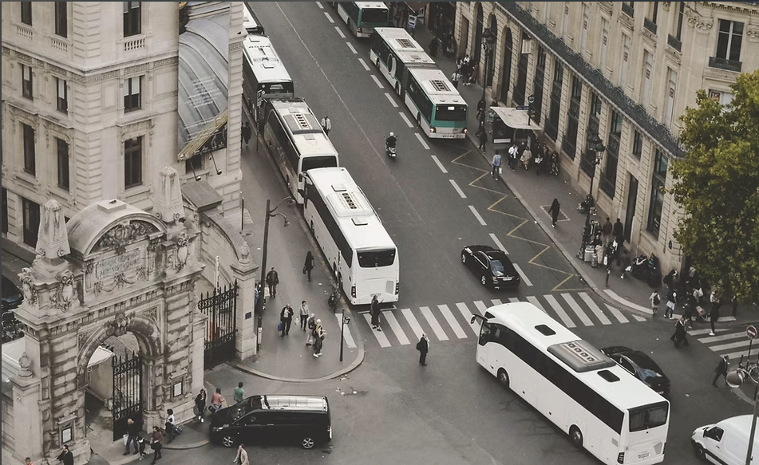

Make going to JUST easier
The bus reservation system will significantly streamline the process for students traveling to the university. By allowing students to reserve their seats in advance, reducing wait times and minimizing overcrowding.
This efficiency not only helps students save time but also provides them with a more reliable means of transportation, allowing them to arrive on campus faster and more comfortably. Overall, it enhances the commuting experience, making it easier for students focus on their studies rather than transportation logistics.
